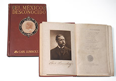
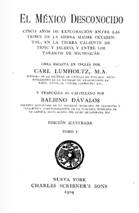

Referencias
Carl Lumholtz
1851-1922
Carl Lumholtz es considerado uno de los pioneros de la antropología mexicana debido a su amplio trabajo en campo sobre diferentes pueblos indígenas del país.
Nació en Noruega y estudió teología en la Universidad de Oslo (1876). Como desde joven tuvo inclinaciones naturalistas y era un explorador nato, aceptó ser enviado a Australia para recolectar animales y plantas que formarían parte de las colecciones biológicas del Museo de Historia Natural de la universidad donde había sido estudiante.
La convivencia con los pueblos originarios de ese país y el registro de sus formas de vida durante cuatro años de exploración (1880-1884) dio origen a sus primeros trabajos etnográficos.
Más tarde consiguió el apoyo del Museo Americano de Historia Natural, la Sociedad Geográfica Americana (ambos de Estados Unidos) y el gobierno mexicano para comenzar sus exploraciones por el territorio nacional.
En total emprendió seis viajes de investigación entre 1890 y 1910, en los que recorrió principalmente amplias zonas del norte y occidente de México. Así pudo convivir y fotografiar a los purépechas, tepehuanos, tarahumaras, coras, huicholes, nahuas, pápagos y tarascos. También hizo registros arqueológicos, del paisaje, la flora y la fauna de varios de los estados que visitó.
El resultado de sus estudios y esfuerzos culminaron con la publicación del voluminoso libro “El México Desconocido” (1902), originalmente escrito en inglés y después traducido al español. Esta obra es a la fecha un referente para los estudios sociales de la época del Porfiriato así como etnográficos por sus numerosos datos, descripciones, anécdotas y material fotográfico.
Carl Lumholtz viajó a otros lugares del mundo, como la India y Borneo, y al final regresó a su país, donde murió.
Aportación


El México desconocido
Lumholtz Carl